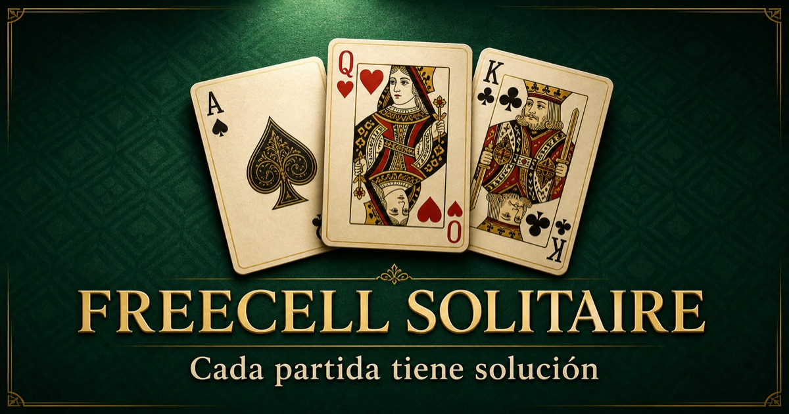

Gratis · Sin registro · Para móvilSolitario FreeCell
El clásico juego de Carta Blanca con controles táctiles, pistas claras y un reto nuevo cada día.
EMPEZAR A JUGAR GRATIS →- ✓ Partidas ilimitadas
- ✓ Pistas
- ✓ iPhone y Android
Reto diario de FreeCell · Cómo jugar · Jugar sin descargar
Play in English · Guía rápida · Reto diario · Probar y comentar · Novedades · RSS · Más juegos de Pablo